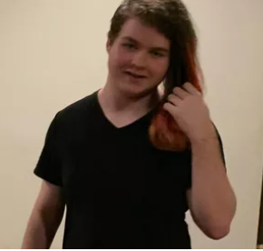
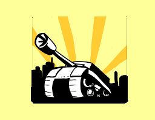

BeastKiller
Jackon Riley Edward-Todd
IS
Go fund me
Spotify

Newgrounds

Steam
Biography
I am a producer, FNaF fan, and a human. The past is the past, focus on what you can do in the present. Always try to improve yourself and be ready to take criticism.
Dedicated to the memory of Jackson Riley Edward-Todd.